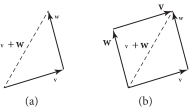
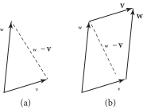
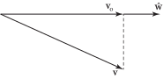
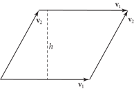

3.3 向量（Vectors）
pbrt 提供了基于相应二维和三维元组类的二维和三维向量类。这两种向量的类型都是由传入的向量元素参数的类型决定的，因此可以轻松实例化整数和浮点类型的向量。
/** Vector2 定义 */
template <typename T>
class Vector2 : public Tuple2<Vector2, T> {
public:
/** Vector2 公有方法 */
};
浮点数和整数类型的二维向量被广泛使用，因此我们将为这两种类型定义别名（aliases）。
/** Vector2* 定义 */
using Vector2f = Vector2<Float>;
using Vector2i = Vector2<int>;
与 Tuple2 类似，我们将不再包含关于 Vector2 的更多细节，因为它与 Vector3 非常相似，我们将对此进行更详细的讨论。
一个 Vector3 的元组分量值给出了它在被定义的空间的 \( x \) 、 \( y \) 和 \( z \)（在三维中）轴上的表示。三维向量 \( \mathbf{v} \) 的各个分量将写作 \( \mathbf{v}_x \) 、 \( \mathbf{v}_y \) 和 \( \mathbf{v}_z \) 。
/** Vector3 定义 */
template <typename T>
class Vector3 : public Tuple3<Vector3, T> {
public:
/** Vector3 公有方法 */
};
我们也为两种常用的三维向量类型定义了类型别名。
/** Vector3* 定义 */
using Vector3f = Vector3<Float>;
using Vector3i = Vector3<int>;
Vector3 提供了一些构造函数，包括一个默认构造函数（此处未显示）和一个允许直接指定每个分量值的构造函数。
/** Vector3 公有方法 */
Vector3(T x, T y, T z) : Tuple3<pbrt::Vector3, T>(x, y, z) {}
还有一个接受一个不同元素类型的 Vector3 的构造函数。它被限定为 explicit ，以防止无意中的隐式自动类型转换（automatic）；必须使用强制类型转换（cast）来显示指定类型。
/** Vector3 公有方法 */
template <typename U>
explicit Vector3(Vector3<U> v)
: Tuple3<pbrt::Vector3, T>(T(v.x), T(v.y), T(v.z)) {}
最后，还提供了用来转换即将介绍的 Point3 和 Normal3 类型的构造函数。它们的简单实现不在此处包含。这些构造函数也带有 explicit 关键字，以帮助确保它们仅在转换有意义的情况下使用。
/** Vector3 公有方法 */
template <typename U>
explicit Vector3(Point3<U> p);
template <typename U>
explicit Vector3(Normal3<U> n);
向量的加法和减法是通过 Tuple3 中的方法按分量逐一进行的。向量加法和减法的常见几何解释如图 3.3 和图 3.4 所示。向量的长度可以通过让各分量与标量逐一相乘或相除来改变。这些功能同样由 Tuple3 提供，因此在 Vector3 类中不需要任何额外的实现。
图 3.3： (a) 向量加法: \( \mathbf{v} + \mathbf{w} \) 。(b) 注意 \( \mathbf{v} + \mathbf{w} \) 的和形成了由 \( \mathbf{v} \) 和 \( \mathbf{w} \) 组成的平行四边形的对角线，这显示了向量加法的交换性: \( \mathbf{v} + \mathbf{w} = \mathbf{w} + \mathbf{v} \) 。
图 3.4：（a）向量减法。（b）如果我们考虑由这两个向量形成的平行四边形，那么对角线由 \( \mathbf{w} - \mathbf{v} \)（虚线）和 \( - \mathbf{v} - \mathbf{w} \)（未显示）给出。
3.3.1 归一化与向量的长度（Normalization and Vector Length）
通常需要对向量进行 归一化（normalize）——即计算一个指向相同方向但只有单位长度的新向量。归一化的向量通常称为 单位向量（unit vector）。本书中对归一化向量的表示法是 \( \hat{\mathbf{v}} \)，即 \( \mathbf{v} \) 的归一化版本。在进行归一化之前，我们将先计算向量的长度。
向量的平方长度由其分量值的平方和给出。
/** Vector3 内联函数 */
template <typename T>
T LengthSquared(Vector3<T> v) { return Sqr(v.x) + Sqr(v.y) + Sqr(v.z); }
讲到计算向量的长度会引发一个困惑： Length() 函数应该返回什么类型？例如，如果 Vector3 存储的是整数类型，那么该类型可能不是一个合适的返回类型，因为向量的长度不一定是整数值。在这种情况下， Float 会是一个更好的选择，但是我们不应该对所有情况都标准化为 Float ，因为对于一组双精度值的 Vector3 ，我们也应该将长度返回为 double 。在我们继续深入高级 C++的旅程中，我们使用一种被称为 类型特征（type traits） 的技术来解决这个困境。
首先，我们定义一个通用的 TupleLength 模板类，该类包含一个类型定义 type 。默认值在这里设置为 Float 。
/** TupleLength 定义 */
template <typename T>
struct TupleLength { using type = Float; };
对于 double 类型的 Vector3，我们还提供了一种模板特化（template specialization），当给定的元素类型为 double 时，定义长度的类型为 double。
/** TupleLength 定义 */
template <>
struct TupleLength<double> { using type = double; };
现在我们可以实现 Length()，使用 TupleLength 来确定返回哪种类型。请注意，在函数声明完成之前，返回类型无法指定，因为在解析函数参数之前，类型 T 是未知的。因此，函数被声明为 auto ，返回类型在参数列表之后指定。
/** Vector3 内联函数 */
template <typename T>
auto Length(Vector3<T> v) -> typename TupleLength<T>::type {
using std::sqrt;
return sqrt(LengthSquared(v));
}
在这几行代码中还有一个 C++的细微之处：读者可能会想，为什么在 Length() 的实现中有一个 using std::sqrt 的声明，然后再调用 sqrt() ，而不是直接调用 std::sqrt() ？之所以使用这种结构，是因为我们希望能够使用分量类型 T 即使他们没有可用的 std::sqrt() 重载。例如，我们稍后用到的 Vector3 会使用即将介绍的 Interval 类来存储每个分量的数值区间。根据这里的代码写法，如果 std::sqrt() 支持类型 T ，则调用该函数的 std 变体。如果不支持，那么我们只要定义一个接受我们自定义类型的名为 sqrt() 的函数，就会使用该版本。
有了这些， Normalize() 的实现就变得简单了。使用 auto 作为返回类型可以确保，例如，如果 Normalize() 被调用时传入一个整数分量的向量，则根据除法运算符的类型转换，返回的向量类型具有 Float 类型的分量。
/** Vector3 内联函数 */
template <typename T>
auto Normalize(Vector3<T> v) { return v / Length(v); }
3.3.2 点积与叉积（Dot and Cross Product）
两个有用的向量运算是点积（也称为标量积或内积）和叉积。对于两个三维向量 \( \mathbf{v} \) 和 \( \mathbf{w} \) ，它们的 点积（dot product） \( ( \mathbf{v} \cdot \mathbf{w} ) \) 定义为
\[
\mathbf{v}_x \mathbf{w}_x + \mathbf{v}_y \mathbf{w}_y + \mathbf{v}_z \mathbf{w}_z
\]
并且实现如下。
/** Vector3 内联函数 */
template <typename T>
T Dot(Vector3<T> v, Vector3<T> w) {
return v.x * w.x + v.y * w.y + v.z * w.z;
}
从点积的定义可以直接得出一些基本性质。例如，有向量 \( \mathbf{u} \)，\( \mathbf{v} \)，\( \mathbf{w} \) 和一个标量 \( s \)，那么：
\[ \begin{align} ( \mathbf{u} \cdot \mathbf{v} ) &= ( \mathbf{v} \cdot \mathbf{u} ) \\ ( s\mathbf{u} \cdot \mathbf{v} ) &= s( \mathbf{u} \cdot \mathbf{v} ) \\ ( \mathbf{u} \cdot ( \mathbf{v} + \mathbf{w} ) ) &= ( \mathbf{u} \cdot \mathbf{v} ) + ( \mathbf{u} \cdot \mathbf{w} ) \end{align} \]
点积与两个向量的夹角有一个简单的关系：
\[ ( \mathbf{v} \cdot \mathbf{w} ) = \| \mathbf{v} \| \| \mathbf{w} \| \cos \theta \]
其中 \( \theta \) 是 \( \mathbf{v} \) 和 \( \mathbf{w} \) 之间的角度， \( \| \mathbf{v} \| \) 表示向量 \( \mathbf{v} \) 的长度。由此可知，当且仅当 \( \mathbf{v} \) 和 \( \mathbf{w} \) 垂直（perpendicular）时， \( ( \mathbf{v} \cdot \mathbf{w} ) \) 为零，前提是 \( \mathbf{v} \) 和 \( \mathbf{w} \) 都不是 退化的（degenerate）（零向量）——等于 \( (0,0,0)\)。一组两个或多个相互垂直的向量称为 正交（orthogonal）。单位向量的正交集合称为 标准正交（orthonormal）。
根据方程（3.1），如果 \( \mathbf{v} \) 和 \( \mathbf{w} \) 是单位向量，则它们的点积是它们之间夹角的余弦。由于在渲染时常常需要计算两个向量之间夹角的余弦，我们将频繁利用这一性质。
如果我们想要找到两个归一化向量之间的夹角，可以使用标准库的反余弦函数，将两个向量的点积传给它。然而，当两个向量几乎平行或几乎朝相反方向时，这种方法可能会导致精度损失。下面的重新计算更多地使用接近原点的数值，因为那里的浮点精度更高，结果也更精确。
/** Vector3 内联函数 */
template <typename T>
Float AngleBetween(Vector3<T> v1, Vector3<T> v2) {
if (Dot(v1, v2) < 0)
return Pi - 2 * SafeASin(Length(v1 + v2) / 2);
else
return 2 * SafeASin(Length(v2 - v1) / 2);
}
我们还需要频繁计算点积的绝对值。 AbsDot() 函数为我们完成了这一操作，因此在这种情况下不再需要单独调用 std::abs() 。
/** Vector3 内联函数 */
template <typename T>
T AbsDot(Vector3<T> v1, Vector3<T> v2) { return std::abs(Dot(v1, v2)); }
图 3.5： 向量 \( \mathbf{v} \) 在归一化向量 \( \hat{\mathbf{w}} \) 上的正交投影给出了一个与 \( \hat{\mathbf{w}} \) 平行的向量 \( \mathbf{v}_\mathbf{o} \) 。差向量 \( \mathbf{v} - \mathbf{v}_{\mathbf{o}} \) 在此以虚线表示，它垂直于 \( \hat{\mathbf{w}} \) 。
基于点积的一个实用的向量运算是 施密特正交化（Gram–Schmidt process），它将一组形成基（basis）的非正交向量转换为正交向量，这些正交向量张成相同的基。该过程基于对向量 \( \mathbf{v} \) 在归一化向量 \( \hat{\mathbf{w}} \) 上的 正交投影（orthogonal projection） 的连续应用，该投影由 \( ( \mathbf{v} \cdot \hat{\mathbf{w}} ) \hat{\mathbf{w}} \) 给出（见图 3.5）。正交投影可用于计算出新向量
\[ \mathbf{v}_\perp = \mathbf{v} - ( \mathbf{v} \cdot \hat{\mathbf{w}} ) \hat{\mathbf{w}} \]
该向量与 \( \mathbf{w} \) 正交。以这种方式计算 \( \mathbf{v}_\perp \) 的一个优点是 \( \mathbf{v}_\perp \) 和 \( \mathbf{w} \) 张成的子空间与 \( \mathbf{v} \) 和 \( \mathbf{w} \) 相同。
GramSchmidt() 函数实现了方程 (3.2)；它期望向量 w 已经被归一化。
/** Vector3 内联函数 */
template <typename T>
Vector3<T> GramSchmidt(Vector3<T> v, Vector3<T> w) {
return v - Dot(v, w) * w;
}
叉积（cross product） 是三维向量中另一种有用的运算。给定两个三维向量，叉积 \( \mathbf{v} \times \mathbf{w} \) 是一个与它们都垂直的向量。给定正交向量 \( \mathbf{v} \) 和 \( \mathbf{w} \) ，则定义 \( \mathbf{v} \times \mathbf{w} \) 为一个向量，使得 \( ( \mathbf{v},\mathbf{w},\mathbf{v}\times\mathbf{w} ) \) 形成一个正交坐标系。
叉积定义为：
\[ \begin{align} ( \mathbf{v} \times \mathbf{w} )_x &= \mathbf{v}_y \mathbf{w}_z - \mathbf{v}_z \mathbf{w}_y \\ ( \mathbf{v} \times \mathbf{w} )_y &= \mathbf{v}_z \mathbf{w}_x - \mathbf{v}_x \mathbf{w}_z \\ ( \mathbf{v} \times \mathbf{w} )_z &= \mathbf{v}_x \mathbf{w}_y - \mathbf{v}_y \mathbf{w}_x \\ \end{align} \]
记住这一点的一种方法是计算矩阵的行列式：
\[ \mathbf{v} \times \mathbf{w} = \begin{vmatrix} i & j & k \\ \mathbf{v}_x & \mathbf{v}_y & \mathbf{v}_z \\ \mathbf{w}_x & \mathbf{w}_y & \mathbf{w}_z \\ \end{vmatrix} \]
其中 \( i \) 、 \( j \) 和 \( k \) 分别表示轴 \( (1,0,0) \) 、 \( (0,1,0) \) 和 \( (0,0,1) \) 。请注意，这个方程仅仅用于帮助记忆，而不是严谨的数学结构，因为矩阵中的元素混用了标量和向量。
这里叉积的实现使用了在 B.2.9 节中介绍的 DifferenceOfProducts() 函数。给定值 a 、 b 、 c 和 d ，它用一种比直接实现该表达式更好保持浮点精度的方式计算 a*b-c*d 。这个问题并非理论上的：之前的 pbrt 版本不得不使用双精度来实现 Cross() ，以避免数值误差导致渲染图像中的伪影。使用 DifferenceOfProducts() 是一个更好的解决方案，因为它可以完全在单精度下操作，同时仍能计算出低误差的结果。
/** Vector3 内联函数 */
template <typename T>
Vector3<T> Cross(Vector3<T> v, Vector3<T> w) {
return {DifferenceOfProducts(v.y, w.z, v.z, w.y),
DifferenceOfProducts(v.z, w.x, v.x, w.z),
DifferenceOfProducts(v.x, w.y, v.y, w.x)};
}
从叉积的定义出发，我们可以推导出
\[
\| \mathbf{v} \times \mathbf{w} \| = \| \mathbf{v} \| \| \mathbf{w} \| |\sin \theta |
\]
其中 \( \theta \) 是 \( \mathbf{v} \) 和 \( \mathbf{w} \) 之间的夹角。这一点的重要含义是，两个垂直单位向量的叉积本身也是一个单位向量。还要注意，如果 \( \mathbf{v} \) 和 \( \mathbf{w} \) 平行，则叉积的结果是一个零向量（degenerate vector）。
这个定义还展示了一种方便计算平行四边形（parallelogram）面积的方法（图 3.6）。如果平行四边形的两条边由向量 \( \mathbf{v}_1 \) 和 \( \mathbf{v}_2 \) 给出，并且它的高度为 \( h \) ，那么面积为 \( \| \mathbf{v}_1 \| h \) 。由于 \( h = \sin \theta \| \mathbf{v}_2 \| \) ，我们可以使用方程（3.3）得出面积为 \( \| \mathbf{v}_1 \times \mathbf{v}_2 \| \) 。
图 3.6： 由向量 \( \mathbf{v}_1 \) 和 \( \mathbf{v}_2 \) 给出的平行四边形的面积等于 \( \| \mathbf{v}_1 \| h \) 。根据方程 (3.3)，向量 \( \mathbf{v}_1 \) 和 \( \mathbf{v}_2 \) 的叉积的长度等于这两个向量长度的乘积乘以它们之间夹角的正弦——即平行四边形的面积。
3.3.3 基于向量的坐标系（Coordinate System from a Vector）
我们有时会发现，仅用一个归一化的三维向量来构建局部坐标系是有用的。为此，我们必须找到两个额外的归一化向量，使得这三个向量相互垂直。
给定一个向量 \( \mathbf{v} \) ，可以证明这两个向量
\[ \left( 1 - \frac{\mathbf{v}_x^2}{1 + \mathbf{v}_z}, -\frac{\mathbf{v}_x \mathbf{v}_y}{1 + \mathbf{v}_z}, -\mathbf{v}_x \right) \text{和} \left( -\frac{\mathbf{v}_x\mathbf{v}_y}{1+\mathbf{v}_z}, 1 - \frac{\mathbf{v}_y^2}{1+\mathbf{v}_z}, -\mathbf{v}_y \right) \]
满足这些条件。然而，直接计算这些属性时，当 \( \mathbf{v}_z \approx -1 \) 时误差较大，因为计算 \( 1/(1+\mathbf{v}_z) \) 时会损失精度。下面的实现中重新整理了该计算来解决了这个问题。
/** Vector3 内联函数 */
template <typename T>
void CoordinateSystem(Vector3<T> v1, Vector3<T> *v2, Vector3<T> *v3) {
Float sign = pstd::copysign(Float(1), v1.z);
Float a = -1 / (sign + v1.z);
Float b = v1.x * v1.y * a;
*v2 = Vector3<T>(1 + sign * Sqr(v1.x) * a, sign * b, -sign * v1.x);
*v3 = Vector3<T>(b, sign + Sqr(v1.y) * a, -v1.y);
}